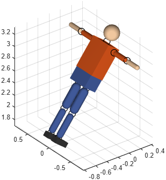

Multi-body model imported from a file (URDF, OBJ, STL or PLY)
Function phx.assembly.import | Package: phx.assembly
phx.assembly.import reads a model file and creates the
phx.Body objects it describes. The format is chosen from the extension:
a URDF (.urdf, .xml) file
becomes one body per link connected by joints; a Wavefront OBJ
(.obj) file becomes one body per object (o/g group) with no joints;
an STL or PLY file becomes a single body. To load an OBJ as one merged body instead
of separate parts, use phx.shape.Mesh.
OBJ objects import as dynamic bodies with a convex collision envelope (set
Envelope to override), each body frame at its object's centroid.
Only genuine 3D solids are imported — flat objects (ground planes, light quads, decals) and
line- or point-only objects carry no useful collision volume and are skipped.
A URDF file also creates a joint for every revolute, continuous, prismatic or fixed joint of the
robot. Despite the name of the format, URDF files describe more than robots — ragdolls,
vehicles, furniture and single-body props from public model libraries import the same way. The
assembled model is placed in its zero (home) configuration with the base at the world origin,
unless a pose is given by the Position and
Orientation or EulerAngles
options.
bodies = phx.assembly.import(file) creates the bodies in the
current axes and returns them in a struct whose field names are the link names (made valid MATLAB
identifiers; the original URDF name is preserved in the Name
property). [bodies,joints] = phx.assembly.import(file) also
returns all created joints in a struct keyed by the joint names.
[___] = phx.assembly.import(ax,___) draws into the given axes
instead of the current axes; an empty target ([]) creates the
bodies without graphics for headless simulations.
The base-pose options apply to every format. The remaining options are specific to one
branch — passing a mesh option to a URDF file, or MeshPath to a
mesh file, raises phx:import:unsupportedOption.
| Option | Default | Description |
|---|---|---|
| Position | [0 0 0] | World position of the base (root link frame). |
| Orientation | eye(3) | World rotation of the base as a 3×3 rotation matrix. Same convention as phx.Body.Orientation. |
| EulerAngles | [0 0 0] | World rotation of the base as Euler angles (z→y→x order), an alternative to Orientation. |
| MeshPath | "" | URDF only. Root folder used to resolve package:// URIs and relative file names of mesh geometries. Meshes are always searched relative to the folder of the URDF file as well. |
| Scale | [1 1 1] | Mesh files only. Scale factor applied to the imported mesh. |
| Envelope | "convex" | Mesh files only. Collision envelope of every imported body: "box", "cylinder", "sphere", "convex" or "concave". See phx.shape.Mesh. |
| FlipFaces | false | Mesh files only. Reverse the triangle winding of the "concave" collision mesh when its solid side comes out wrong. |
| Density | 1000 | Mesh files only. Volumetric density of the imported bodies, kg/m³. URDF masses come from the inertial elements instead. |
Every link becomes a phx.Body with the body frame at the origin of the link's first visual geometry (PHX shapes are always centred at the body origin). Geometries map to Box, Cylinder, Sphere, Capsule (a common vendor extension) and STL and OBJ meshes with the convex collision envelope. Joints of type revolute and continuous become phx.RevoluteJoint, prismatic joints become phx.PrismaticJoint (sliding along the joint axis) and fixed joints become phx.FixedJoint. Planar joints have no direct equivalent yet and are approximated by a phx.GenericJoint with a warning; floating joints impose no constraint, so no joint is created and the child link is left free. Joint limits are ignored and all joints are passive — no motors are created. Masses come from the inertial elements; only the diagonal of the inertia tensor expressed in body axes is used.
clf; view(3); axis equal; grid on; camlight headlight; [bodies, joints] = phx.assembly.import("robot.urdf"); bodies.base.Type = "static"; sim = phx.Simulation(bodies); sim.step(1, 500, 5); delete(sim);
[bodies, joints] = phx.assembly.import("human.urdf", ... "Position", [-0.16 0 2.6], "EulerAngles", [0 0.66 0]);
